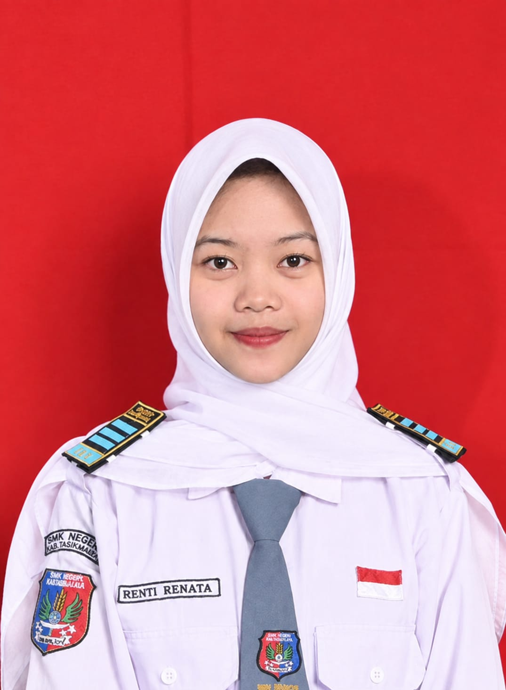

Membangun Solusi Web yang Modern, Presisi, & Responsif.
Siswi Rekayasa Perangkat Lunak SMKN Manonjaya yang berfokus pada pengembangan antarmuka web interaktif, pengalaman pengguna (UI/UX), dan rekayasa perangkat lunak.
Web Developer
Frontend Builder
Jurusan RPL
SMKN Manonjaya

Renti Renata
Pengembang Web
Tentang Saya 📖
Klik atau arahkan kursor ke buku di bawah untuk membuka halaman cerita
Keahlian & Pembelajaran ⌨️✨
Kemampuan yang sedang saya asah dan pelajari secara konsisten
Pemrograman Web
Frontend & CodeDesain & Alat Produksi
Visual & ProductivityProyek Pilihan 💻
Klik kartu proyek di bawah untuk melihat detail pengerjaan dan fitur lengkapnya.
 Proyek PKL
01
Lihat Detail
Proyek PKL
01
Lihat Detail
Redesain Website Access Media
Pembaruan antarmuka utama (UI/UX) situs tempat PKL agar lebih bersih, modern, dan responsif.
 Branding
02
Lihat Detail
Branding
02
Lihat Detail
Company Profile Design
Perancangan materi profil perusahaan dan slide presentasi bisnis berbasis Canva.
 Tugas SMK
03
Lihat Detail
Tugas SMK
03
Lihat Detail
Aplikasi Pengelolaan Laundry
Sistem informasi manajemen transaksi usaha laundry berbasis PHP & MySQL.
Pengalaman Saya 💼✨
Aktivitas pembelajaran dan praktik kerja yang sedang aktif berlangsung saat ini.
Access Media Tasikmalaya
Web Developer & UI/UX Trainee
- Mengembangkan & meredesain tata letak antarmuka web perusahaan agar responsif.
- Menyusun alur visual komponen UI/UX menggunakan Tailwind CSS dan JavaScript.
- Bekerja sama dengan tim dalam pembuatan materi media presentasi & branding.
SMKN Manonjaya
Siswi Rekayasa Perangkat Lunak (RPL)
- Mempelajari dasar-dasar algoritma pemrograman, MySQL, dan Pemrograman Web (PHP/HTML/CSS).
- Aktif mengerjakan tugas praktek pembuatan aplikasi berbasis web sederhana.
- Melatih logika pemecahan masalah dan kerja sama tim dalam proyek sekolah.
Sticky Guestbook
Tinggalkan salam, masukan, atau pesan di papan digital ini.
Hubungi Saya
Terbuka untuk diskusi proyek web development maupun kolaborasi desain. Silakan hubungi langsung melalui Instagram atau WhatsApp di bawah ini:
Judul Proyek
Deskripsi proyek akan tampil di sini.
Poin & Fitur Utama